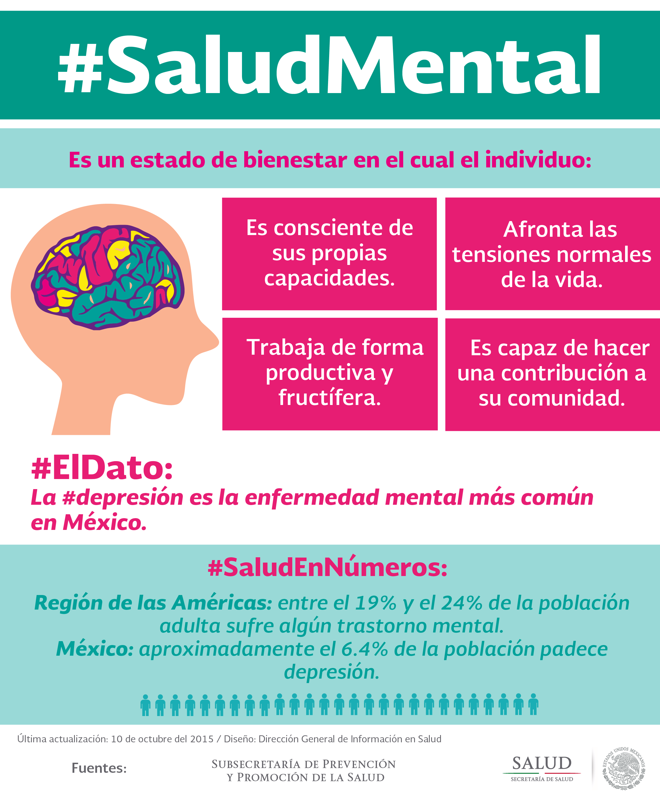

Dia mundial de la salud 7 de abril
INFOGRAFIA


7 DE ABRIL - DÍA MUNDIAL DE LA SALUD. Cada año, el 7 de abril se celebra el Día Mundial de la Salud para conmemorar el aniversario de la fundación de la Organización Mundial de la Salud (OMS) en 1948.Como todos los 7 de abril, se conmemora esta fecha por un hecho en particular. Enterate cuál fue, en esta nota. Hoy se celebra el Día Mundial de la Salud, una fecha que se conmemora desde 1948, con la creación de la Organización Mundial de la Salud.
Para el Día Mundial de la Salud, el 7 de abril de 2018 , la OMS pide a los líderes mundiales que se comprometan a adoptar medidas concretas para promover la salud de todas las personas. La cobertura sanitaria universal (CSU) se logra cuando existe una firme determinación política.
Función de la OMS en la salud pública. La OMS cumple sus objetivos mediante las siguientes funciones básicas: ofrecer liderazgo en temas cruciales para la salud y participar en alianzas cuando se requieran actuaciones conjuntas; ... seguir de cerca la situación en materia de salud y determinar las tendencias sanitarias.
El objetivo de la cobertura sanitaria universal es asegurar que todas las personas reciban los servicios sanitarios que necesitan, sin tener que pasar penurias financieras para pagarlos.

¿Qué es lo que no se incluye en la cobertura sanitaria universal? La CSU no implica la cobertura gratuita de todas las intervenciones sanitarias posibles, independientemente de su costo, ya que ningún país puede permitirse ofrecer todos los servicios gratuitamente de forma sostenible. La CSU no se refiere únicamente a la financiación de la salud: abarca todos los componentes del sistema de salud, a saber, los sistemas de prestación de servicios de salud, el personal sanitario, las instalaciones sanitarias o las redes de comunicación, las tecnologías sanitarias, los sistemas de información, los mecanismos de garantía de la calidad, la gobernanza y la legislación. La CSU no solo tiene por finalidad asegurar un conjunto de servicios de salud mínimos, sino también lograr la ampliación progresiva de la cobertura de los servicios de salud y de la protección financiera, conforme se disponga de más recursos. La CSU no solo engloba los servicios de tratamiento específicos, sino también incluye los servicios a la población como las campañas de salud pública, la adición de flúor al agua, el control de los lugares de reproducción de los mosquitos, entre otros. La CSU comprende mucho más que solo la salud. Adoptar medidas para alcanzar la cobertura sanitaria universal equivale a adoptar medidas para lograr la equidad, las prioridades en materia de desarrollo y la inclusión y cohesión sociales.